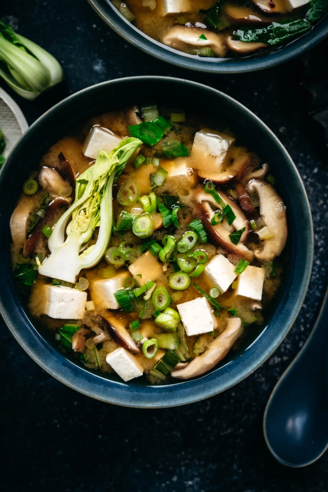

Miso Soup

This miso soup is full of savory flavors. Add more dashi to your soup if you want a stronger stock. You can use yellow, white, or red miso paste for this soup — yellow miso is sweet and creamy, red miso is stronger and saltier.
Did you know you can make restaurant-worthy miso soup in the comfort of your own home? Well, you can! You just need a good recipe — and that's where we come in. This miso soup recipe is bold, flavorful, and easy to make with just five ingredients.
What is Miso Soup?
Miso soup is a traditional Japanese soup that starts with a dashi stock and is flavored with miso paste. Dashi is an umami-rich stock made from dried seaweed and dried fish. Miso paste, meanwhile, is a paste made from soybeans, salt, and koji rice.
The brothy soup usually contains tofu and green onions. It can also feature seaweed, mushrooms, daikon, and more.
Miso soup is traditionally served with rice.
Ingridients
- Water
- Dashi granules and miso paste
- Tofu
- Green onions
Steps
- Bring the water and dashi granules to a boil.
- Reduce the heat and whisk in miso paste.
- Stir in the tofu and green onions.
- Simmer and serve.
Return Home